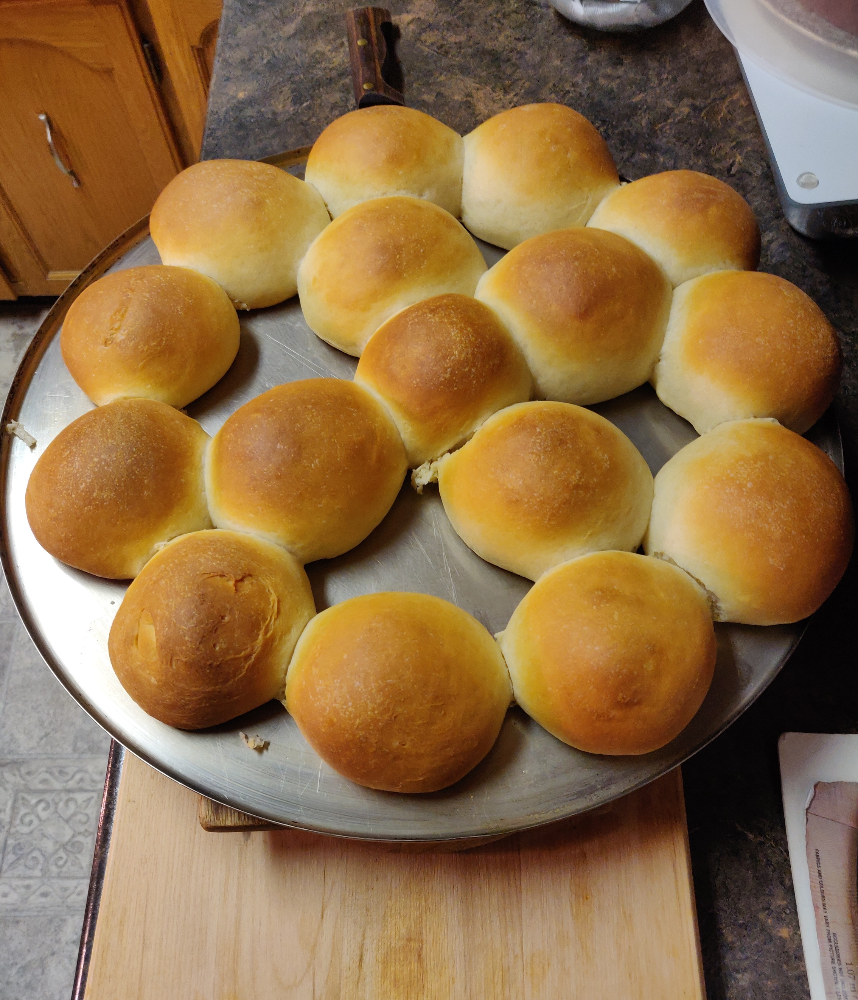

Homemade Buns

Description
An excellent yeast bun recipe that can be used for hamburgers or just plain dinner rolls. They don't take long to make and have never failed for me!
Ingredients
- 4 cups all-purpose flour, divided, or more as needed
- 2 (.25 ounce) packages dry yeast
- 1 cup milk
- ¾ cup water
- ½ cup vegetable oil
- ¼ cup white sugar
- 1 teaspoon salt
Steps
- Stir 2 cups flour and yeast together in a large bowl. Heat milk, water, oil, sugar, and salt together in a microwave-safe bowl in the microwave until lukewarm; add to flour mixture and beat until smooth, about 3 minutes.
- Mix in 2 cups remaining flour, then add up to 1 cup more flour as necessary to make a soft dough. Dust a flat surface with flour; turn dough out onto floured surface and let rest under a bowl for about 10 minutes. Meanwhile, lightly grease a baking sheet.
- Shape dough into 12 slightly flat balls and place on the prepared baking sheet to rise until doubled in size.
- Preheat the oven to 400 degrees F (200 degrees C).
- Bake in the preheated oven for 12 to 15 minutes.